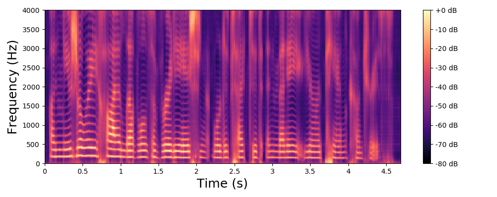

Learning and controlling the source-filter representation of speech with a variational autoencoder
Sadok samir1 Simon Leglaive1 Laurent Girin2 Xavier Alameda-Pineda3 Renaud Séguier1
1CentraleSupélec, IETR UMR CNRS 6164, France 2Univ. Grenoble Alpes, CNRS, Grenoble-INP, GIPSA-lab, France 3Inria, Univ. Grenoble Alpes, CNRS, LJK, France
Understanding and controlling latent representations in deep generative models is a challenging yet important problem for analyzing, transforming and generating various types of data. In speech processing, inspiring from the anatomical mechanisms of phonation, the source-filter model considers that speech signals are produced from a few independent and physically meaningful continuous latent factors, among which the fundamental frequency and the formants are of primary importance. In this work, we show that the source-filter model of speech production naturally arises in the latent space of a variational autoencoder (VAE) trained in an unsupervised fashion on a dataset of natural speech signals. Using only a few seconds of labeled speech signals generated with an artificial speech synthesizer, we experimentally demonstrate that the fundamental frequency and formant frequencies are encoded in orthogonal subspaces of the VAE latent space and we develop a weakly-supervised method to accurately and independently control these speech factors of variation within the learned latent subspaces. Without requiring additional information such as text or human-labeled data, we propose a deep generative model of speech spectrograms that is conditioned on the fundamental frequency and formant frequencies, and which is applied to the transformation of speech signals.
Phase reconstruction problem
Before listening to examples of speech signals generated with the proposed method, we would like to emphasize the problem of reconstructing time-domain signals from spectrograms (i.e., reconstructing the phase). Let us consider an original speech signal from which we extract a spectrogram using the short-term Fourier transform (STFT). We map this original spectrogram through a pre-trained variational autoencoder (VAE), from which we obtain a reconstructed spectrogram (after encoding-decoding, see the paper for more details on the VAE architecture). Then, we consider two techniques for reconstructing the time-domain speech signal from the output spectrogram:
Below, on the left, you can listen to the signal reconstructed by inverse STFT, using the exact oracle phase of the original signal.
Below, on the right, you can listen to the signal reconstructed using WaveGlow (Prenger et al., 2019), a neural vocoder trained on a single-speaker speech dataset.
By comparing the quality of both reconstructions, we conclude that most artifacts in the output time-domain speech signal are due to the quality of the reconstructed phase, and not to the quality of the output spectrogram provided by the VAE. When performing transformations in the latent space of the VAE, we do not have access to an oracle phase and thus have to use WaveGlow (or other phase reconstruction techniques).
Signal reconstructed by inverse STFT from the VAE output spectrogram and the original oracle phase.
Signal reconstructed by WaveGlow from the VAE output spectrogram.
Visualisation of the learned latent subspaces
The following figures show trajectories of different speech factors of variation (from left to right: fundamental frequency, first, second and third formant frequencies) within the learned latent subspaces (See Appendix C.1 in the paper for more details). It can be seen that two data vectors corresponding to close values of a given factor have projections that are also close in the learned latent subspaces. This can be seen from the color bars that indicate the values of the factors of variation.
Vowel Generation
As shown in the following figure, we have developed a graphical interface to generate vowels with the proposed method. The first and second formant frequencies are discriminative features of the vowels, as can be seen from a vowel diagram. In this graphical interface, the values of the frist and second formant frequencies correspond to the y-axis and x-axis respectively, and we can also choose the fundamental frequency in between 100Hz and 300Hz. Given these values, the proposed method generates a speech spectrogram and a time-domain signal is reconstructed with WaveGlow. We provide below examples of generated vowels with different values of the fundamental frequency and first two formant frequencies.
Generation of vowels (/a/, /e/, /i/, /o/, /u/). Using the proposed conditional deep generative model of speech spectrograms, we generate a speech signal with a continuous transition between 5 vowels. Input trajectories of the fundamental frequency (linearly increasing between 100 and 200 Hz) and three first formant frequencies are shown with black lines in the figure (see the legend).
Controlling factors of variation
F0 generation
In this animation, we generate spectra where only the fendamental frequency varies in the input of the method, the value of the other factors (formant frequencies) is fixed.
F0 transformation
The examples below are obtained with the proposed method (Equation 8 in the paper) where we only modify the fundamental frequency (f0) according to an input trajecteory represented by the dashed line in blue. The trajectory of the formant frequencies are defined by the input original speech signal and they are not altered by the proposed method.
Original spectrogram.
Each line in this figure below corresponds to a speech signal uttered by a different speaker. Left: spectrogram of the original speech signal; Right: transformed spectrogram where the fundamental frequency is set constant over time.
F1, F2 and F3 Generation
In these animations below, we generate spectra (left) and corresponding spectrograms (right) using Equation 9 in the paper. For each animation, we vary one single factor at a time.
We vary the formant 1, while fixing the other formants as well as the pitch. One can notice by listening to the audio signal the opening of the mouth.
We vary the formant 2, while fixing the other formants as well as the pitch.
We vary the formant 3, while fixing the other formants as well as the pitch.
Voicing and whispering
In the examples below, we show that the proposed method can remove the pitch of voiced speech signals (i.e., transformation to a whispered speech signal) and it can also add pitch to whispered speech signals (i.e., transformation to a voiced speech signal). A whispered speech signal is obtained from a voiced speech signal by simply subtracting the latent representation of the signal and its projection onto the subspace corresponding to f0 (i.e., by considering only the two first terms in the right-hand side of Equation (8)). A voiced speech signal is obtained from a whispered speech signal by simply adding the latent representation of the signal and the target component provided by the regression model mapped from the learned subspace to the original latent space (i.e., by considering only the first and last terms in the right-hand side of Equation (8)).
Whispering results in a spectrogram where the harmonic component is neutralized, while voicing adds a harmonic component. The original formant structure is preserved in both cases. This is remarkable considering that the VAE was not trained on whispered speech signals, and it further confirms that the proposed method dissociates the source and the filter contributions in the VAE latent space.
Whispering
Signal reconstructed by WaveGlow from the VAE output spectrogram without transformation in the latent space.
Signal reconstructed by WaveGlow from the VAE output spectrogram with transformation (whispering) in the latent space.

Voicing
Signal reconstructed by WaveGlow from the VAE output spectrogram without transformation in the latent space.
Signal reconstructed by WaveGlow from the VAE output spectrogram with transformation (voicing) in the latent space.